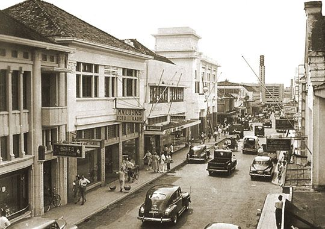
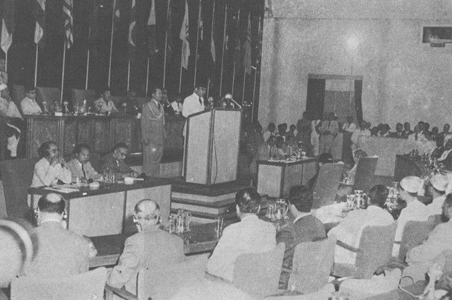
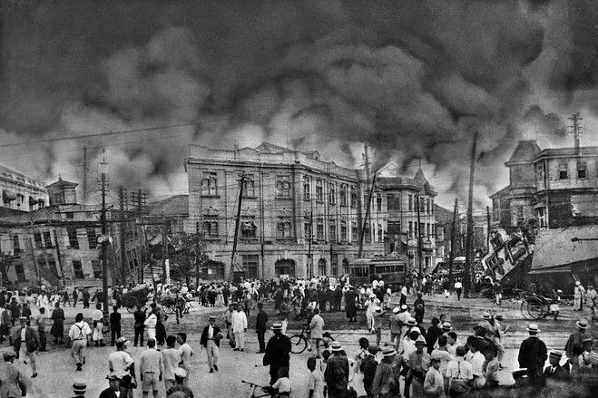
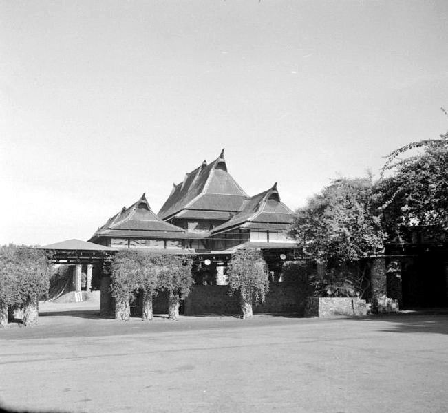
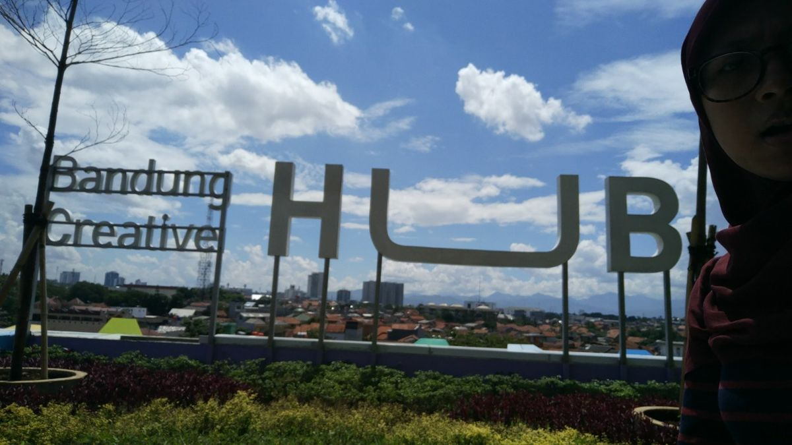
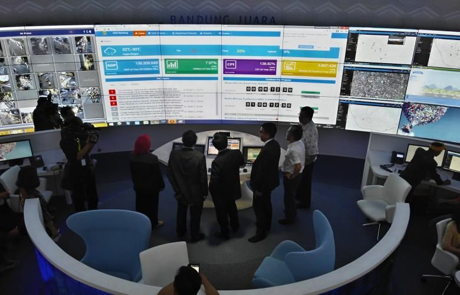

Melihat Alur Sederhana Perkembangan dari Bandung Tempo Dulu hingga Bandung Era Smart City

Bandung awalnya merupakan daerah pedalaman. Titik baliknya terjadi ketika Gubernur Jenderal Daendels membangun Jalan Raya Pos (Groote Postweg). Bupati Bandung saat itu, R.A. Wiranatakusumah II, memindahkan ibu kota kabupaten dari Krapyak (Dayeuhkolot) ke situs kota Bandung yang sekarang pada tahun 1810 agar lebih dekat dengan jalur transportasi utama tersebut.
Jalan Raya Pos bertransformasi menjadi pusat modernisasi dengan arsitektur bergaya Art Deco yang megah, seperti Hotel Savoy Homann dan Gedung Merdeka, hingga dijuluki Parijs van Java. Puncaknya, kawasan ini mencetak sejarah dunia saat menjadi tempat berlangsungnya Konferensi Asia Afrika (KAA) pada April 1955 yang mempersatukan bangsa-bangsa di Asia dan Afrika.


Menolak menyerahkan kota kepada Sekutu dan NICA untuk dijadikan markas militer, sekitar 200.000 penduduk Bandung Selatan membakar rumah mereka sendiri dalam waktu tujuh jam sebelum mengungsi. Peristiwa heroik ini juga menandai gugurnya Mohammad Toha saat meledakkan gudang mesiu sekutu di Dayeuhkolot.
Identitas Bandung sebagai kota pendidikan berakar dari dibukanya Technische Hoogeschool te Bandoeng (sekarang ITB) pada 3 Juli 1920 sebagai sekolah tinggi teknik pertama di Hindia Belanda. Kehadiran institusi ini menarik kaum intelektual dari berbagai daerah dan memicu lahirnya berbagai perguruan tinggi besar lainnya yang membentuk karakter akademis kota ini.


Bandung resmi dinobatkan sebagai bagian dari UNESCO Creative Cities Network (UCCN) dalam bidang Design pada Desember 2015. Pengakuan internasional ini didasarkan pada kuatnya ekonomi kreatif yang digerakkan oleh komunitas anak muda, mulai dari industri fashion lokal (distro), musik independen, hingga desain grafis dan arsitektur.
Transformasi Bandung menuju kota pintar diwujudkan melalui integrasi teknologi informasi dalam tata kelola pemerintahan dan pelayanan publik. Langkah besarnya ditandai dengan peresmian Bandung Command Center (BCC) untuk memantau kondisi kota secara real-time, mengintegrasikan data internal, serta mempercepat penanganan pengaduan warga melalui aplikasi digital.

geser atau pakai tombol panah untuk melihat lebih banyak
Bandung awalnya merupakan daerah pedalaman. Titik baliknya terjadi ketika Gubernur Jenderal Daendels membangun Jalan Raya Pos (Groote Postweg). Bupati Bandung saat itu, R.A. Wiranatakusumah II, memindahkan ibu kota kabupaten dari Krapyak (Dayeuhkolot) ke situs kota Bandung yang sekarang pada tahun 1810 agar lebih dekat dengan jalur transportasi utama tersebut.
Jalan Raya Pos bertransformasi menjadi pusat modernisasi dengan arsitektur bergaya Art Deco yang megah, seperti Hotel Savoy Homann dan Gedung Merdeka, hingga dijuluki Parijs van Java. Puncaknya, kawasan ini mencetak sejarah dunia saat menjadi tempat berlangsungnya Konferensi Asia Afrika (KAA) pada April 1955 yang mempersatukan bangsa-bangsa di Asia dan Afrika.
Menolak menyerahkan kota kepada Sekutu dan NICA untuk dijadikan markas militer, sekitar 200.000 penduduk Bandung Selatan membakar rumah mereka sendiri dalam waktu tujuh jam sebelum mengungsi. Peristiwa heroik ini juga menandai gugurnya Mohammad Toha saat meledakkan gudang mesiu sekutu di Dayeuhkolot.
Identitas Bandung sebagai kota pendidikan berakar dari dibukanya Technische Hoogeschool te Bandoeng (sekarang ITB) pada 3 Juli 1920 sebagai sekolah tinggi teknik pertama di Hindia Belanda. Kehadiran institusi ini menarik kaum intelektual dari berbagai daerah dan memicu lahirnya berbagai perguruan tinggi besar lainnya yang membentuk karakter akademis kota ini.
Bandung resmi dinobatkan sebagai bagian dari UNESCO Creative Cities Network (UCCN) dalam bidang Design pada Desember 2015. Pengakuan internasional ini didasarkan pada kuatnya ekonomi kreatif yang digerakkan oleh komunitas anak muda, mulai dari industri fashion lokal (distro), musik independen, hingga desain grafis dan arsitektur.
Transformasi Bandung menuju kota pintar diwujudkan melalui integrasi teknologi informasi dalam tata kelola pemerintahan dan pelayanan publik. Langkah besarnya ditandai dengan peresmian Bandung Command Center (BCC) untuk memantau kondisi kota secara real-time, mengintegrasikan data internal, serta mempercepat penanganan pengaduan warga melalui aplikasi digital.